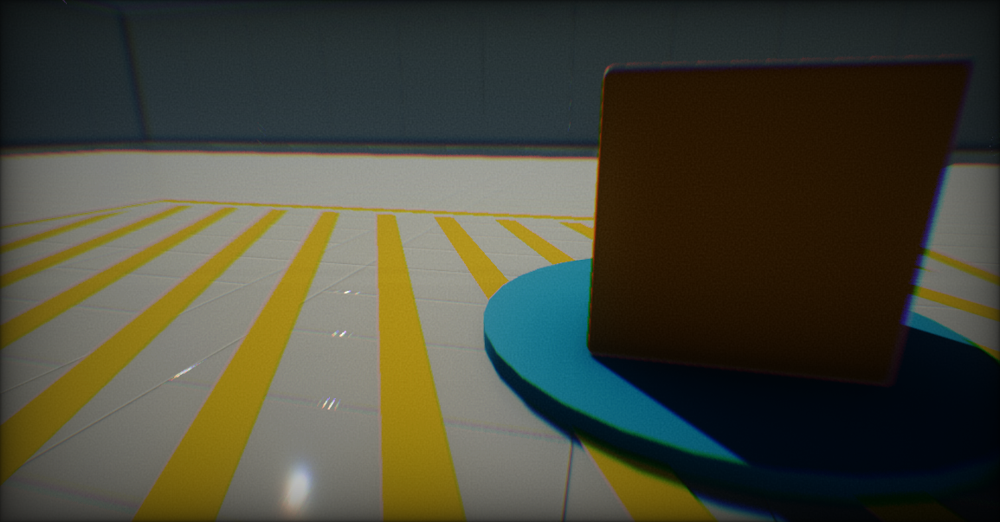
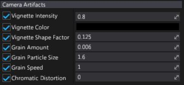

Camera Artifacts

Camera Artifacts is a set of effects that helps to simulate real life cameras artifacts. This includes vignetting, noise grain, and chromatic distortion. All those effects are related to camera film and lenses.
Properties

| Property | Description |
|---|---|
| Vignette Intensity | Strength of the vignette effect. Value 0 hides it. The default value is 0.8. |
| Vignette Color | Color of the vignette. |
| Vignette Shape Factor | Controls shape of the vignette. Values near 0 produce rectangle shape. Higher values result in round shape. The default value is 0.125. |
| Grain Amount | Intensity of the grain filter. Value 0 hides it. The default value is 0.005. |
| Grain Particle Size | Size of the grain particles. The default value is 1.6. |
| Grain Speed | Speed of the grain particles animation. |
| Chromatic Distortion | Controls chromatic aberration effect strength. Value 0 hides it. |
| Screen Fade Color | Screen tint color (alpha channel defines the blending factor). |